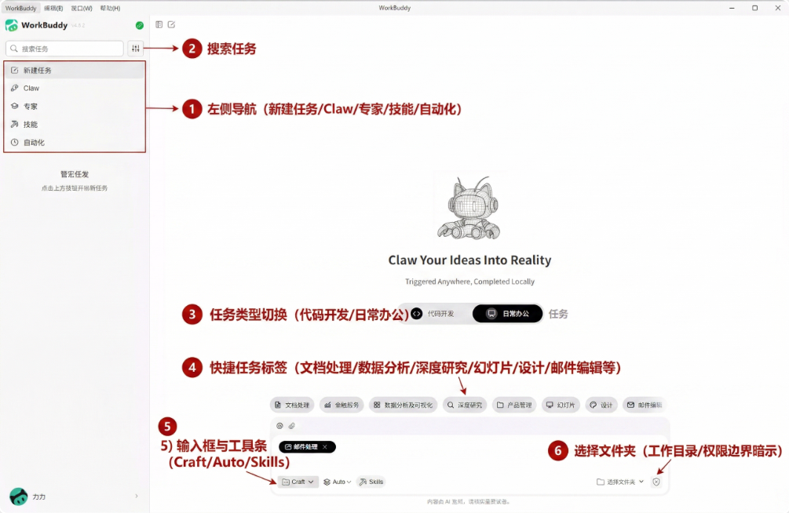
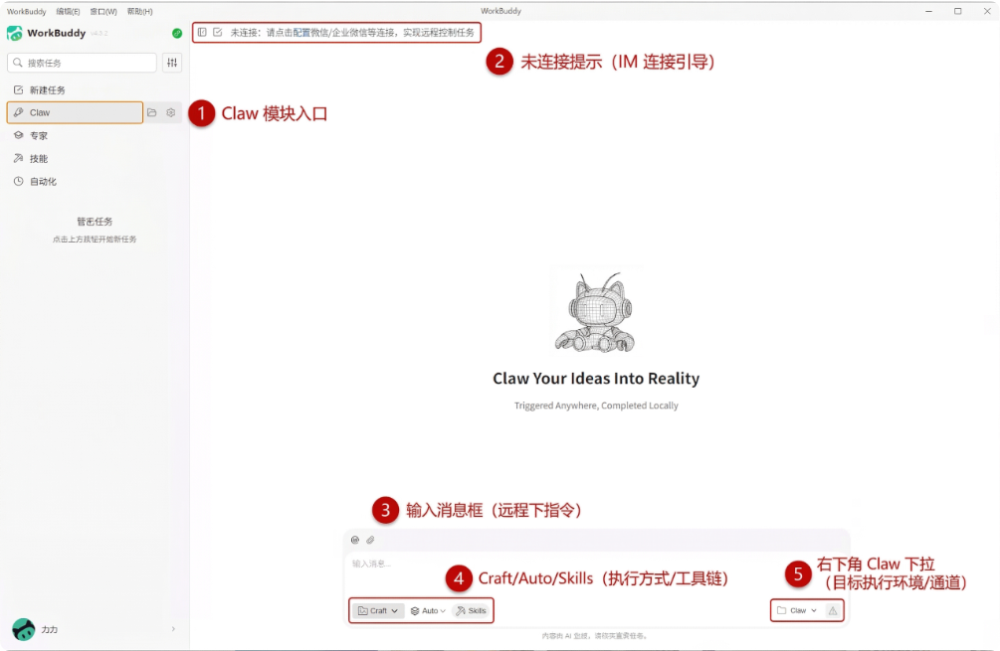
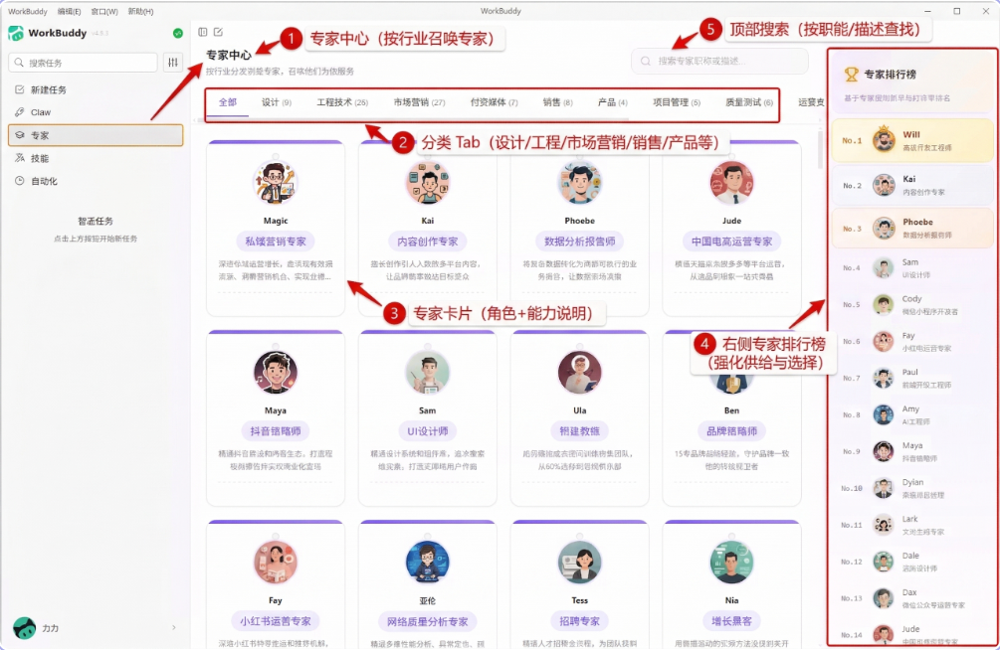
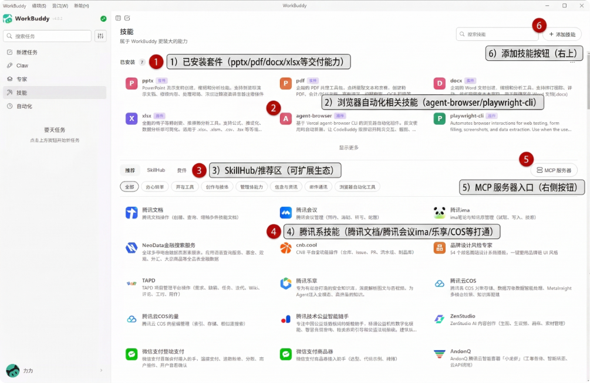
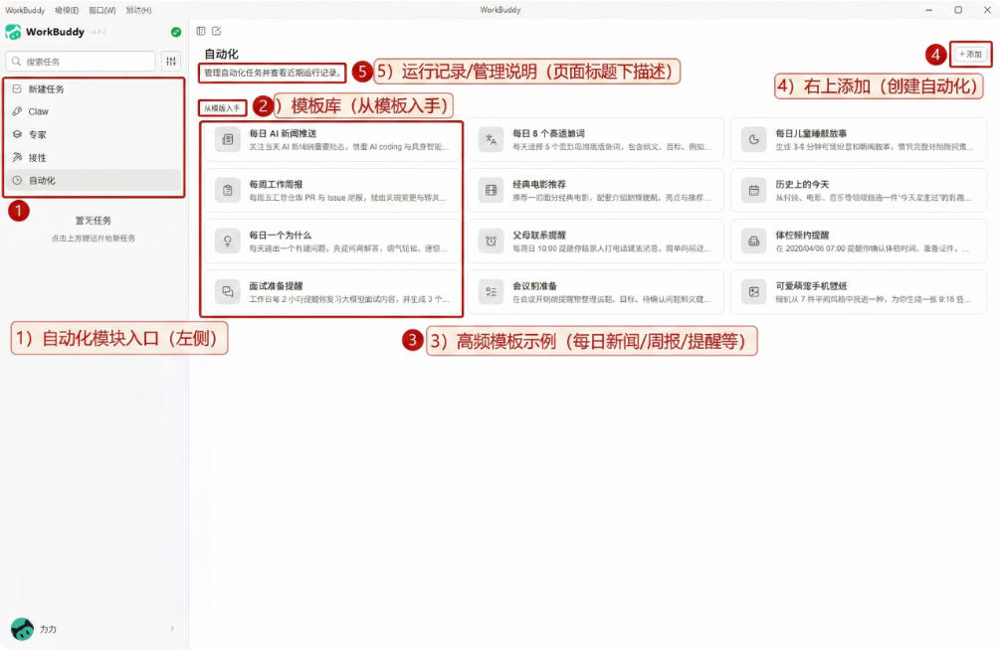

| 维度 | WorkBuddy 详情 |
|---|---|
| 出品方 | 腾讯云 CodeBuddy 团队（2023年推出 AI 代码助手起步，技术积累3年） |
| 一句话定位 | "AI Agent 办公新范式" —— 全场景 AI 智能体桌面工作台 |
| 上线时间 | 2026.02.06 内测 → 2026.03.09 正式发布（打磨仅1个月，但有2000+内部员工验证） |
| 覆盖系统 | macOS + Windows 桌面端 + 微信小程序 |
| 核心模型 | 混元/DeepSeek/GLM/Kimi/MiniMax（5+大模型切换） |
| 迭代速度 | 平均 1.7天/版本（40天24版本 → 行业最快之一） |
| 内部验证 | 上线前 2000+非技术员工（HR/行政/运营）使用；CodeBuddy 90% 工程师覆盖 |
| 生态维度 | 详情 | 评价 |
|---|---|---|
| IM 生态 | 5大IM（企微+钉钉+飞书+QQ+微信客服）+ 4个扩展入口（微信ClawBot+微信小程序+QQ邮箱Connector+腾讯乐享Connector）= 9大触达渠道 | 竞品最多 |
| Skill 生态 | SkillHub（2.2万）+ Plugin Market + Desktop Skills = 3个市场合一；精选95个，预置8个 | 最完整 |
| 腾讯系集成 | 腾讯文档、QQ浏览器、腾讯地图等 10+产品已Skill化 | 独占优势 |
| IMA 接入 | 2026.03.17 首发笔记插件（注：IMA 是腾讯开放能力，非WorkBuddy独有） | 非壁垒 |
| MCP 协议 | 支持 MCP + OAuth 标准接入 → 可扩展第三方工具 | 标准开放 |
| 企业安全 | AD域控/SSO + Skills白名单 + 操作日志审计 + DLP集成 | 企业级 |
| IM 渠道 | 面向 | 触达的用户群 | 解决的核心场景 |
|---|---|---|---|
| 微信客服号 | To C | 个人用户（12亿微信用户池） | 基础消息交互 / 初期IM入口（后被ClawBot增强） |
| 微信 ClawBot | To C | 个人用户（微信生态内） | 扫码即用 / 2分钟配置 / 远程操控（"地铁上发消息让龙虾准备PPT"） |
| 微信小程序 | To C | 微信用户（无需安装，扫码即用） | 语音操控 / 拍照传文件 / 移动端轻量入口 |
| To C | 年轻用户 / 学生群体 | 学习辅助 / 内容创作 / 社交场景 | |
| 企业微信 | To B | 传统企业 / 零售 / 制造 / 政务 | 客户管理 / 内部审批 / 多部门Agent隔离 / OA集成 |
| 飞书 | To B | 互联网 / 科技公司 / 创业团队 | 项目协作 / 文档生成 / 会议纪要 / OKR联动 |
| 钉钉 | To B | 中小企业 / 教育 / 政企 | 考勤审批 / 排班管理 / 家校互动 / 会议调度 |
| QQ邮箱 Connector | 双栖 | 个人+企业邮箱用户 | 邮件自动化 / 附件处理 / 邮件摘要 |
| 腾讯乐享 Connector | To B | 使用腾讯乐享的企业用户 | 企业知识库集成 / 内部文档检索 / 知识沉淀 |
| 项目 | 详情 |
|---|---|
| 新用户赠送 | 5,000 Credits（≈1.59亿 Tokens） |
| 每日签到 | +100 Credits |
| 裂变激励 | 合伙养虾计划 → 分享→注册→使用/付费升级，分层奖励 |
| 预计个人Pro | 约 ¥99/月（参考行业定价） |
| 当前阶段 | 公测圈地 尚未正式收费 |
| 对比维度 | 个人版 | 企业版 |
|---|---|---|
| 登录方式 | 微信/QQ个人号 | 企微SSO/AD域控 |
| 数据权限 | 个人隔离 | 部门/角色/项目分级 |
| Skills管理 | 自由安装 | 白名单管控+管理员审批 |
| 计费方式 | 月付/积分 | 年度License按席位阶梯 |
| 数据安全 | 标准加密 | 私有化部署+审计日志+DLP |
| 技术支持 | 社区 | 专属客服+SLA保障 |
| 产品 | 免费层 | 入门付费 | 专业/高端 | 策略阶段 |
|---|---|---|---|---|
| WorkBuddy | 5000 Credits | 未公布（预计 ¥99/月） | 企业定制 | 圈地期 |
| 灵犀Claw | 内测限时免费 | 预计跟 WPS 会员（25-35元/月） | 未公布 | 内测期 |
| EasyClaw | 200积分/天 | Plus ¥39/月 · Pro ¥79/月 | Ultra ¥199/月 · 企业定制 | 最成熟 |
| QClaw | 4000万Token/天 ≈ 无限 | 未公布 | ClawHub 付费Skill分成 | 圈地期 |
| ArkClaw | Lite 首月 ¥9.9 | Pro 首月 ¥49.9 | — | 早期商业化 |
| Kimi Claw | — | 包含在 ¥199/月会员中 | — | 捆绑销售 |
| 阶段 | 时间 | 核心动作 | 效果 |
|---|---|---|---|
| 预热造势 | 3月6日 | 深圳滨海大厦免费摆摊装龙虾，80%参与者为非技术用户 | 近千人排队 · 登上微博热搜 · 马化腾朋友圈转发 |
| 全渠道爆发 | 3月9-10日 | 正式上线 + 5000 Credits赠送 + 当晚宕机 → 致歉+10倍扩容 | 腾讯股价+7.27% · 单日市值+3400亿港元 · 重回5万亿 |
| 持续迭代 | 3.11-4月 | 百万Credits悬赏活动(5周) + 每1-2周大更新 + 微信直连 + 小程序 | 20+主流媒体报道 · KOL矩阵二次放大 · 华尔街见闻二度专访 |
| 口碑裂变 | 持续 | "养龙虾"社交话题 + UGC悬赏 + 场景化数字（"3分钟处理1095个文件"） | 知乎/掘金/CSDN 大量实战教程 · 花旗维持买入目标价783港元 |
| 时间 | 事件 / 节点 | 宣发动作 | 效果 / 数据 |
|---|---|---|---|
| 2023年中 | AI 代码助手 CodeBuddy 上线 | 内部技术布局，积累 Agent 能力 | 为 WorkBuddy 提供3年技术底座 |
| 2026.01 | WorkBuddy 内部使用 | 不对外宣传，纯内部打磨体验 | 内部 2000+ 非技术员工（HR/行政/运营）试用验证 |
| 2026.02.06 | 首次公开，启动内测 | 小范围种子用户，低调获取反馈 | 打磨约1个月，CodeBuddy 90% 工程师已覆盖 |
| 2026.03.06 | 🦞 深圳滨海大厦"免费摆摊装龙虾" | 线下事件营销 → 近千人排队（80%非技术用户）→ 登上微博热搜 → 马化腾朋友圈转发 → X平台病毒传播 | 现象级事件：国际化出圈，低成本制造社交话题 |
| 2026.03.09 | 🚀 正式上线日 | 36氪首发 + 5000 Credits赠送 + 当晚因流量激增宕机 | 首日用户涌入远超预期 |
| 2026.03.10 | 📈 资本市场引爆 | 致歉 + 紧急扩容10倍算力 + 补偿1000 Credits | 腾讯+7.27% · 单日市值+3400亿港元 · 重回5万亿 · 花旗目标价783港元 |
| 2026.03.11 | 💰 百万Credits悬赏活动启动 | "秀出你的 WorkBuddy Claw 实战" → 持续5周（3/10-4/10）→ 总奖励100万Credits | 激励UGC内容持续产出 → 扩大二次传播 |
| 2026.03.12 | 微信一键直连上线 | "在地铁上发消息让龙虾准备会议材料，到公司PPT已做好" → 差异化场景传播 | 移动端语音操控成为核心卖点 |
| 2026.03.13 | 媒体密集沟通期 | 产品负责人汪晟杰接受华尔街见闻专访，披露"请求量瞬间超过CodeBuddy很多倍"；21世纪经济报道记者实测 | 20+主流媒体（36氪/钛媒体/界面/新浪财经/深圳新闻网）全链路报道 |
| 2026.03.18 | 💼 马化腾战略定调 | 马化腾在财报沟通会确认：2026年 AI 新品投入至少翻倍 | 最高层战略背书 → B端客户信心提振 |
| 2026.03.19 | 4.6.0 大版本 + 5大IM一次性打通 | 功能爆发 + 新闻稿：专家中心 + MCP + 插件市场 + 5大IM平台同步上线 | 从"聊天工具"升级为"AI工作台"品类定义 |
| 2026.03.22 | 微信 ClawBot 上线 | 社区教程爆发：知乎/掘金/CSDN 大量实战教程 | UGC 内容自发传播 |
| 2026.03.27 | 🎤 腾讯云上海峰会 | 高管站台：副总裁发布 Agent 全景图 → 公布2026路线图 | 企业级市场信号释放 → B端客户认知建立 |
| 2026.03.30 | 微信小程序版上线 | 宣传语："挑战一下，明天上班不带电脑试试" | 嵌入14亿微信用户池 |
| 2026.04.13 | 🗞️ 华尔街见闻二度专访 | 「对话腾讯WorkBuddy负责人：一个想对标Cowork的产品野心」 | 从"工具"升级为"平台野心"的信号 |
| 渠道类型 | 具体渠道 | 内容形式 | 目标 |
|---|---|---|---|
| 付费流量 | 腾讯系广告投放（约2.8亿资源） | 信息流 + 开屏 + 搜索 | 首日爆发获客 |
| 权威媒体 | 36氪、华尔街见闻、智东西、IT之家、凤凰科技 | 首发独家 + 产品评测 + 高管专访 | 品牌认知 + 可信度背书 |
| 技术社区 | 知乎、掘金、CSDN、腾讯云社区 | 实战教程 + 深度评测 + 问答 | 开发者/极客圈影响力 + SEO |
| 社交媒体 | 微博（张军官宣）、X/Twitter、微信公众号 | 话题制造 + 高管站台 + 病毒传播 | 破圈 + 国际化 |
| 线下活动 | 深圳"免费装龙虾"、腾讯云上海峰会 | 体验式营销 + 行业大会 | 线下引爆线上 + B端客户认知 |
| UGC/口碑 | 合伙养虾计划、社区案例征集、教程激励 | 用户自发教程 + 使用案例 + 邀请裂变 | 零成本长尾增长 |
| 活动名称 | 时间 | 形式 | 奖励/规模 | 核心目标 |
|---|---|---|---|---|
| 上线专属见面礼 | 3/9 - 3/31 | 国内版用户无门槛领取 | 5000 Credits/人 | 降低试用门槛，冷启动拉新 |
| 百万Credits悬赏 | 3/10 - 4/10（5周） | UGC征集："秀出你的 Claw 实战" | 总奖励100万Credits | 激励UGC内容 → 扩大二次传播 |
| 深圳线下摆摊 | 3/6 | 腾讯滨海大厦广场，工程师现场帮装 | 近千人排队 | 话题制造 → 触达大众用户 |
| 服务故障补偿 | 3/10 + 4/2 | 故障后主动补偿 | 1000 Credits/人 | 口碑维护 → 危机转正面 |
| 免费云资源福利 | 截至3/31 | 腾讯云开发资源赠送 | 开发到部署一站式 | 绑定开发者生态 |
| 📌 | 内容 | 说明 | 链接 |
|---|---|---|---|
| 🏠 | WorkBuddy 官网首屏 | Banner："AI Agent 办公新范式" | ▶ 官网 → |
| 🎯 | 官方公测发布文 | "Hi，你的一号员工WorkBuddy，今日上岗公测！" | ▶ 腾讯云首发 → |
| 💰 | 百万Credits悬赏 | "国内首个IM原生AI Agent平台" | ▶ 活动详情 → |
| 📱 | 微信小程序上线 | "挑战一下，明天上班不带电脑试试" | ▶ 腾讯新闻 → |
| 🦞 | 深圳摆摊活动 | 近千人排队 · 登上微博热搜 | ▶ 搜狐报道 → |
| 🗞️ | 华尔街见闻专访 | "一个想对标Cowork的产品野心" | ▶ 专访原文 → |
| 📈 | 36氪：市值重回5万亿 | 腾讯+7.27% · 单日+3400亿港元 | ▶ 36氪报道 → |
| 📰 | 21世纪经济报道实测 | "发出指令后即可读取桌面文件名" | ▶ 21经报道 → |
| 策略 | 具体做法 |
|---|---|
| ① 借势"龙虾"热词 | 绑定 OpenClaw 生态品类词（GitHub 35万+ Star），降低用户教育成本 |
| ② 线下引爆线上 | "免费装龙虾" → X平台病毒传播 → 国际化出圈 |
| ③ 危机公关反转 | 首日崩溃 → 致歉+补偿 → "最真诚道歉"二次传播 |
| 策略 | 具体做法 |
|---|---|
| ④ 快速迭代=持续曝光 | 1.7天/版本 · 36天20+版本 · 每次更新配宣发 |
| ⑤ 裂变增长飞轮 | 合伙养虾（分层奖励）+ UGC案例征集 |
| ⑥ 高管+品牌站台 | 腾讯云峰会副总裁 + 张军微博官宣 |
| 维度 | WorkBuddy | QClaw |
|---|---|---|
| 核心获客引擎 | IM 全覆盖 + 2.8亿流量 | 腾讯电脑管家内置 + 微信深度绑定 |
| 冷启动补贴 | 5000 Credits | 4000万Token/天（≈无限弹药） |
| 裂变机制 | 合伙养虾计划（分层奖励） | 社区口碑传播（无正式裂变） |
| 内容策略 | 技术评测 KOL 矩阵 | 腾讯云社区深度文 |
| 生态留存 | Skills + MCP → 工作流沉淀 | 预置39 Skill → 开箱即用 |
| 迭代速度 | 1.7天/版本（40天24版） | ~2周/大版本 |
| 模块 | 定位 | 核心价值 | 增长角色 |
|---|---|---|---|
| ① 首页/新建任务 | 任务化交互入口 | 从"聊天"升级为"可交付任务工作台" | 转化：冷启动快捷标签 → 首次任务 |
| ② Claw 远程触达 | IM连接 + 统一指令 | 微信/企微随时触发 → 桌面执行 | 获客：高频触达 = 战略增长入口 |
| ③ 专家中心 | 岗位化能力套餐 | 100+专家卡片 → 降低使用门槛 | 活跃：探索发现 → 尝试新专家 |
| ④ 技能中心 | 交付物 + 生态扩展 | pptx/docx/xlsx + SkillHub/MCP + 腾讯系 | 深度：能力越装越多 → 沉淀成本 |
| ⑤ 自动化 | 周期性数字同事 | 一次设置 → 持续产出（新闻/周报/提醒） | 留存：从"一次性使用"到"日常依赖" |

| 功能点 | 说明 |
|---|---|
| ① 左侧导航 | 5大一级模块：新建任务 / Claw / 专家 / 技能 / 自动化 |
| ② 任务类型分流 | 将用户意图分流为代码开发 vs 日常办公，降低选择成本 |
| ③ 快捷任务标签 | 文档处理 / 数据分析 / 深度研究 / 幻灯片 / 设计 / 邮件编辑 等一键触发 |
| ④ 执行方式显性化 | 输入框上方 Craft / Auto / Skills 明确开关 — 提示用户"任务会被执行与交付" |
| ⑤ 工作目录选择 | 要求用户选择文件夹 → 把本地执行边界在 UI 层显性表达，强调权限可控 |

| 功能点 | 说明 |
|---|---|
| ① Claw 一级入口 | 在左侧导航中作为独立一级模块（与新建任务并列） |
| ② IM 连接引导 | 顶部提示"请点击配置微信/企微等连接" — 连接完成 = 获得随时远程触发能力 |
| ③ 统一输入框 | 无论本地还是IM来源，收敛到同一个输入框与执行开关 |
| ④ 执行方式复用 | Craft/Auto/Skills 三种模式在远程场景下完全复用 |
| ⑤ 环境切换 | 右下角 Claw 下拉 → 目标执行环境/通道选择 |

| 功能点 | 说明 |
|---|---|
| ① 按行业召唤专家 | "按行业分发到最专业的专家，直接使用他们为你服务" |
| ② 岗位/职能分类Tab | 全部 / 设计(9) / 工程技术(26) / 市场营销(27) / 付费媒体(7) / 销售 / 产品(4) / 项目管理(5) / 质量测试(6) |
| ③ 专家卡片 | 头像 + 角色名 + 能力说明 + 预期交付描述，降低"装技能/配工具"的理解门槛 |
| ④ 右侧排行榜 | 专家排行榜 — 强化供给与选择，辅助从众决策 |
| ⑤ 搜索能力 | 按职能/描述查找专家 |

| 功能点 | 说明 |
|---|---|
| ① 交付物Skill前置 | pptx / pdf / docx / xlsx 放最显眼区域 → 强调"直接产出可用成果" |
| ② 浏览器自动化 | agent-browser / playwright-cli 显著露出 → 调研/抓取/填表执行底座 |
| ③ SkillHub推荐区 | 推荐 / SkillHub / 条件 三个Tab → "官方精选 + 可扩展外部工具"双轨 |
| ④ 腾讯系Skill | 腾讯文档 / 腾讯会议 / ima / 乐享 / COS / TAPD / 微信支付 等内生态打通 |
| ⑤ MCP服务器入口 | 右侧按钮直接连接 MCP 服务器 → 扩展第三方工具能力 |
| ⑥ 添加技能 | 支持自行添加/安装新Skill |

| 功能点 | 说明 |
|---|---|
| ① 自动化一级入口 | 左侧导航独立模块 — 与新建任务/Claw/专家/技能并列 |
| ② 模板库 | "从模板入手" → 每日AI新闻推送 / 每周工作周报 / 每日一个办什么 / 面试准备提醒 等 |
| ③ 高频模板示例 | 每日5个高通量词 / 经典电影推荐 / 父母联系提醒 / 会议前准备 / 可爱猫咪手机壁纸 / 伟悟蜥蜴提醒 |
| ④ 创建自动化 | 右上角"+ 添加"按钮 → 自定义触发器/频率/权限/输出位置 |
| ⑤ 运行记录 | 页面标题下"管理自动化任务并查看近期运行记录" → 可追踪可审计 |
| 日期 | 版本 | 核心新功能 | 策略解读 |
|---|---|---|---|
| 3.04 | 4.5.0 | 正式发布：自然语言 + 多模型 + Skill + 文件读写 + 终端 | MVP 全功能上线 |
| 3.06-3.17 | 4.5.2~4.5.14 | 稳定性修复 × 6版本（中文输入/IM Bot链路） | 前2周只修Bug |
| 3.19 | 4.6.0 | 专家中心 + MCP + 插件市场 + 多渠道Bot + 自动化定时 | 第一个大跳跃 → 从 chat 升级为"工作台" |
| 3.20-3.22 | 4.6.1~4.6.4 | SkillHub + 微信ClawBot + Working Memory | 生态飞轮启动 |
| 3.25-3.28 | 4.7.0~4.7.3 | 自定义模型UI + 专家排行 + MCP OAuth + QQ邮箱 | 企业能力补齐 |
| 3.30 | 4.7.5 | Skill安全检测 + 小程序集成默认开启 | 安全体系 + 小程序入口（第二节点） |
| 3.31-4.10 | 4.8.0~4.9.3 | AI内容标记 + IM审批 + Skills分类筛选 | 产品成熟化迭代 |
| 时间 | WorkBuddy | QClaw | EasyClaw | 灵犀Claw |
|---|---|---|---|---|
| Day 1 | — | 微信客服号 (1) | — | 微信+飞书+WPS 等6渠道同时上线 |
| Day 5 | — | — | WhatsApp (1) | — |
| Day 7-14 | 飞书 Markdown 通知 | — | 飞书 + 企微 (3) | — |
| Day 15-18 | 一次性上线5渠道（企微+钉钉+飞书+QQ+微信客服） | 微信小程序升级 | — | — |
| Day 19-25 | 微信 ClawBot (6) | — | 微信频道 (4) | — |
| Day 26-30 | 微信小程序 (8) | — | — | — |
| Day 30+ | 9大触达渠道（5大IM+4扩展入口） | 1渠道（仅微信） | 4渠道 | 6渠道（微信/企微Bot/钉钉/飞书/WPS协作/QQ Bot） |
| 方式 | 技术方案 | 适用 |
|---|---|---|
| WebSocket长连接 推荐 | 客户端主动建立持久连接 | 大多数场景 |
| URL回调 | 企微向指定URL推送事件 | 已有公网服务 |
| 部门 | Agent配置 |
|---|---|
| 销售 | 独立Agent + CRM/合同/报价 Skill |
| 技术 | 独立Agent + GitHub/CI/CD Skill |
| HR | 独立Agent + 考勤/审批 Skill |
| 财务 | 独立Agent + 报销/预算（只读）Skill |
| 全公司 | 共享Agent + 知识库/OA/日程 |
| 触达方式 | WorkBuddy | 灵犀Claw | EasyClaw | QClaw | ArkClaw | OpenClaw |
|---|---|---|---|---|---|---|
| 桌面客户端 | ✅ | ✅ WPS内嵌 | ✅ | ✅ | ❌ | ✅ |
| 浏览器插件 | ❌ | ❌ | ✅ 唯一 | ❌ | ❌ | ❌ |
| 小程序 | ✅ 已上线（v4.8.0, 2026.03.31） | ❌ | ❌ | ❌ | ❌ | ❌ |
| IM 接入 | ✅ 9大渠道（5大IM+4扩展） | ✅ 6渠道（微信/企微Bot/钉钉/飞书/WPS协作/QQ Bot） | ⚠️ 微信桌面自动化 | ✅ 企微/腾讯会议 | ✅ 飞书/企微 | ❌ |
| 移动 APP | ❌ | ✅ WPS移动 | ❌ | ❌ | ❌ | ❌ |
| Web 端 | ❌ | ✅ WPS网页 | ❌ | ❌ | ✅ | ❌ |
| 特点 | 说明 |
|---|---|
| 🚀 国内高速镜像 | 秒级安装，CDN全国覆盖；缺失时自动回退ClawHub |
| 🏆 官方精选 TOP50 | EdgeOne ClawScan安全扫描 + 人工审核 + 多维评估 |
| 🇨🇳 全中文本土化 | 名称/介绍/文档全中文 + 中文语义搜索 |
| 🛡️ 安全防护 | 自动检测投毒/漏洞/隐私泄露 + 企业白名单 |
| 日期 | 里程碑 |
|---|---|
| 3.10 | SkillHub正式上线（同步ClawHub 1.3万+） |
| 3.12 | 腾讯系10+产品Skill化 |
| 3.17 | IMA Skills上线（首发笔记插件） |
| 3.27 | 发布2026路线图：开源SkillHub + 全场景打通 |
| 产品 | 宣传Skill数 | 实际展示数 | 精选推荐 | 官方预置 | 生态开放度 |
|---|---|---|---|---|---|
| OpenClaw | 未公布 | 53,820 | 5 | 0 | 最大开放生态 |
| WorkBuddy | 2.2万 | 大量 | 95 | 8 | SkillHub本土化最强 |
| MaxClaw | 1.6万 | 大量 | 按用户数推荐 | 4 | Expert Agent 模式 |
| EasyClaw | 1.3万 | 148 | 14 | 12-17 | 猎户星空特色Skill |
| QClaw | 5,000+ | 40 | 无 | 39 | 预置Skill最多 |
| 灵犀Claw | 12 | 12 | 无 | 11 | 完全封闭 |
| 品牌 | 文档撰写 | 内容创作 | 数据分析 | 自动生成PPT | 代码开发 | 社媒管理 | 设计辅助 | 资讯抓取 | 总计 |
|---|---|---|---|---|---|---|---|---|---|
| AnyGen (MiniMax) | 20 | 19 | 14 | 2 | 5 | 0 | 8 | 1 | 88 |
| OpenClaw | 9 | 3 | 5 | 2 | 4 | 3 | 3 | 9 | 86 |
| ArkClaw | 7 | 10 | 7 | 1 | 4 | 4 | 1 | 12 | 82 |
| SkillHub(WorkBuddy/QClaw) | 6 | 18 | 3 | 2 | 1 | 7 | 2 | 2 | 63 |
| 灵犀Claw | 2 | 0 | 2 | 1 | 1 | 0 | 0 | 0 | 11 |
| 产品 | 出品方 | 核心定位 | IM覆盖 | 付费模式 | 生态决定 |
|---|---|---|---|---|---|
| WorkBuddy | 腾讯云 | 完全自研的IM驱动全场景AI Agent平台（非OpenClaw封装） | 9大触达渠道 竞品最多 | Credits圈地 → 个人Pro+企业License | 腾讯IM生态 = 企业级触达 |
| QClaw | 腾讯电脑管家 | 微信远程AI助手 | 1（仅微信） | 4000万Token免费圈地 | 微信深度绑定 = 国民级入口 |
| EasyClaw | 猎豹移动 | 零配置桌面AI Agent | 4 | 定价最成熟 39/79/199/企业 | OpenClaw 封装 + 傅盛IP |
| MaxClaw | MiniMax | Expert Agent 大模型突出 | 有限 | 待确认 | 自研大模型能力 |
| KimiClaw | 月之暗面 | 云端托管 OpenClaw | 飞书Bot | ¥199/月会员捆绑 | Kimi模型 + 全包式体验 |
| 灵犀Claw | 金山WPS | 最懂办公的AI龙虾 | 6渠道（微信/企微/钉钉/飞书/WPS协作/QQ Bot） | 内测免费 → 预计WPS会员（25-35元/月） | WPS 6.47亿用户 = 办公基因最强 |
| ArkClaw | 字节跳动 | 企业协作深度整合 | 飞书+企微 | 预计跟飞书企业版 | 飞书原生bitable/doc/task |
| OpenClaw | 社区开源 | 底座框架（万物之源） | — | 免费开源 | GitHub 35万+ Star 的生态基座 |
| 层级 | 产品 | 核心逻辑 | 护城河 |
|---|---|---|---|
| 平台型 | WorkBuddy、ArkClaw | IM + 生态 + 企业管控 | ⭐⭐⭐⭐ 生态网络效应 |
| 工具型 | 灵犀Claw、EasyClaw | 专精办公 / 极低门槛 | ⭐⭐⭐ 垂直深度 / 低但可复制 |
| 生态型 | QClaw、MaxClaw | 预置Skill / Expert Agent | ⭐⭐⭐ 微信渠道 / 模型能力 |
| 基座型 | OpenClaw | 开源标准，万物之源 | ⭐⭐⭐⭐⭐ 社区不可替代 |
| 竞品 | B端集成方式 | IM平台支持 | 企业管控 | B端成熟度 |
|---|---|---|---|---|
| WorkBuddy | 企微WebSocket/API回调 | 微信/企微/QQ/飞书/钉钉 (5大) | AD域控/SSO/白名单/审计日志 | ★★★★★ |
| ArkClaw | 飞书/企微原生深度集成 | 飞书/企微（bitable/doc/task） | 飞书管理后台统一管控 | ★★★★★ |
| QClaw | 预置企微/腾讯会议Skill | 企微/腾讯会议 | 待确认 | ★★★★★ |
| 灵犀Claw | WPS生态内嵌，无独立B端方案 | ✅ 6渠道（微信/企微Bot/钉钉/飞书/WPS协作/QQ Bot） | WPS企业版权限 | ★★★★★ |
| EasyClaw | 无标准B端方案 | 微信桌面自动化（非标准） | 待确认 | ★★★★★ |
| MaxClaw | API接口为主 | 有限 | 待确认 | ★★★★★ |
| 符号 | 含义 | 判断标准 |
|---|---|---|
| ✅✅ | 强能力 | 有原生/深度Skill + 实测验证表现好（如灵犀Claw的WPS原生docx/xlsx/pptx Skill，ArkClaw的飞书bitable/doc原生集成） |
| ✅ | 有能力 | 有对应Skill或功能，可完成基础任务，但深度一般或未充分实测验证（如通过OpenClaw通用Skill实现） |
| ⚠️ | 弱/不稳定 | 有尝试但实测失败率高 / 功能不完善（如邮件发送多数产品失败；QClaw的PPT生成32min+服务异常） |
| ❌ | 明确失败 | 实测明确失败（如MaxClaw邮件发送功能不存在） |
| — | 无/未涉及 | 未提供该能力或无调研数据可参考 |
| 刚需场景 | WorkBuddy | QClaw | EasyClaw | MaxClaw | KimiClaw | 灵犀Claw | ArkClaw | OpenClaw |
|---|---|---|---|---|---|---|---|---|
| 自动生成PPT | ✅ | ⚠️ | ✅ | ✅ | ✅ | ✅✅ | ✅ | ✅ |
| 文档撰写/报告 | ✅ | ✅ | ✅ | ✅ | ✅ | ✅✅ | ✅ | ✅ |
| 数据分析/Excel | ✅ | ✅ | ✅ | ✅ | ✅ | ✅✅ | ✅✅ | ✅ |
| 远程IM操控 | ✅✅✅ | ✅✅ | ✅ | ⚠️ | ⚠️ | ✅✅ | ✅✅ | — |
| 邮件发送 | ⚠️ | ⚠️ | ⚠️ | ❌ | ⚠️ | ⚠️ | ✅ | ⚠️ |
| 社媒管理 | ✅ | — | ✅ | — | — | — | — | ✅ |
| 设计辅助 | ✅ | — | ✅ | ✅✅ | — | — | — | ✅ |
| 定时自动化 | ✅ | ✅ | ✅ | — | — | ✅ | — | ✅ |
| 产品 | 核心好评 | 核心吐槽 |
|---|---|---|
| WorkBuddy | "真能干活" · 三模式设计好 · 远程操控实用 · "到公司PPT已做好" | 初期不成熟 · Skill安全 · 首日崩溃 |
| 灵犀Claw | "办公基因强" · WPS Skill原生 · MiMo模型好 · 开箱即用 | 内测需邀请码 · 生态封闭 · 评测少 |
| EasyClaw | 零配置 · 中文理解好 · "3分钟启动" | "积分消耗真让人说不出话" · 免费版不够 |
| QClaw | 门槛极低 · 微信入口好 · 4000万Token白嫖 | 功能不成熟 · 自定义弱 · 安全隐患 |
| 能力维度 | WorkBuddy | 灵犀Claw | EasyClaw | QClaw | ArkClaw | MaxClaw |
|---|---|---|---|---|---|---|
| 文档处理 | ★★★★★ | ★★★★★ | ★★★★★ | ★★★★★ | ★★★★★ | ★★★★★ |
| Skill 生态 | ★★★★★ | ★★★★★ | ★★★★★ | ★★★★★ | ★★★★★ | ★★★★★ |
| IM 集成 | ★★★★★ | ★★★★★ | ★★★★★ | ★★★★★ | ★★★★★ | ★★★★★ |
| 企业级能力 | ★★★★★ | ★★★★★ | ★★★★★ | ★★★★★ | ★★★★★ | ★★★★★ |
| 本土化 | ★★★★★ | ★★★★★ | ★★★★★ | ★★★★★ | ★★★★★ | ★★★★★ |
| 产品 | 数据存储 | 权限管控 | 模型调用链路 | 企业合规认证 | 审计日志 | 开源透明度 | 安全成熟度 |
|---|---|---|---|---|---|---|---|
| WorkBuddy | 本地执行优先 文件不离开本地，腾讯云转发指令 |
沙箱+权限隔离 本地文件夹级权限边界 |
多模型通过腾讯云AI Gateway统一调用 混元/DeepSeek/GLM等，客户端不存API Key |
信通院首批通过 腾讯云等保三级 / ISO27001 |
✅ 主机侧审计+流量审计 事前加固→事中检测拦截→事后审计追查 |
❌ 闭源 | ★★★★★ |
| QClaw | 腾讯云（国内） 微信本地+云端混合 |
微信授权范围 消息读取需用户确认 |
混元/第三方模型混合 部分场景经第三方API |
信通院首批通过 腾讯安全体系 |
⚠️ 有限 个人用户为主 |
❌ 闭源 | ★★★★★ |
| EasyClaw | 本地优先 桌面Agent本地运行 |
客户端三层防护 环境防护 + 信息保护 + Skill扫描 |
封装OpenClaw + 多模型 数据经第三方模型API |
无公开认证 | ✅ 客户端内置 工具调用全过程管控 |
⚠️ 基于OpenClaw 上层闭源 |
★★★★★ |
| MaxClaw | MiniMax云端（国内） | 权限最小化原则 显式授权机制 |
自研大模型（M2.5） 云端部署，数据留在MiniMax内 |
有公开隐私政策和服务条款 隐私政策 · 服务条款 |
✅ 实时操作流程展示 可追溯 |
❌ 闭源 | ★★★★★ |
| KimiClaw | 月之暗面云端（国内） | 会员账号级 无企业管控 |
Kimi自研模型 全包式，数据不出Kimi |
待确认 | ⚠️ 有限 | ❌ 闭源 | ★★★★★ |
| 灵犀Claw | 金山云（国内） WPS生态内 |
WPS企业版权限体系 文档级权限控制 |
自研+第三方混合 办公数据经WPS处理 |
依托WPS企业合规 等保 / 国产化适配 |
✅ WPS企业版审计 文档操作可追溯 |
❌ 闭源 | ★★★★★ |
| ArkClaw | 字节云（国内） 飞书生态内 |
飞书管理后台统一管控 企业级 |
豆包大模型为主 火山引擎AI助手安全方案全流程支撑 |
火山引擎安全体系 《OpenClaw安全规范和使用指引》 |
✅ 飞书审计日志 管理员全链路追溯 |
❌ 闭源 | ★★★★★ |
| OpenClaw | 完全本地 数据不离开用户设备 |
用户完全自主 自行配置权限边界 |
用户自选模型 取决于用户配置 |
— 社区项目 无商业认证 |
✅ 本地完整日志 用户完全可控 |
完全开源 GitHub 35万+ Star |
★★★★★ 安全审计通过率仅58.9% |
| 产品 | 授权机制 | 数据流向 | C端风险点 | C端安全评级 |
|---|---|---|---|---|
| WorkBuddy | 微信/企微OAuth授权 Credits消耗可见 |
消息 → 腾讯云混元 生态闭环 |
数据在腾讯生态内闭环，风险较低； 用户对数据流向有基本感知 |
★★★★★ |
| QClaw | 微信扫码 + 本地客户端 | 本地文件/消息 → 云端模型 | 中风险 本地客户端可操作文件和执行命令， 信通院首批通过，腾讯安全沙箱机制 |
★★★★★ |
| EasyClaw | 桌面安装 + 手动授权 内置信息保护 |
本地操作 → 第三方模型API 多方中转 |
中风险 数据经第三方模型API，但客户端内置用户信息安全保护： 自动检测提示词中的隐私信息、敏感密钥、账号凭证等 |
★★★★★ |
| MaxClaw | 账号注册 | 对话 → MiniMax云端 | 风险一般； 隐私政策透明度低，数据训练承诺不明确 |
★★★★★ |
| KimiClaw | Kimi会员账号 | 全托管在Kimi云端 | 数据全在月之暗面，相对封闭； 无独立安全承诺页面 |
★★★★★ |
| 灵犀Claw | WPS账号授权 | 文档 → 金山云 生态闭环 |
WPS已有大量用户数据基础，增量风险可控； 文档内容是否用于训练未明确 |
★★★★★ |
| ArkClaw | 飞书账号 | 飞书生态内 生态闭环 |
与飞书同等安全级别； 数据留在字节生态内 |
★★★★★ |
| OpenClaw | 用户完全自配 | 完全取决于用户配置 | ✅ 可做到完全本地零泄露； 但配置门槛高，普通C端用户难驾驭 |
★★★★★ |
| 产品 | 使用 Skill 时 | 上传/发布 Skill 时 | 创建 Skill 时 | Skill 安全评级 |
|---|---|---|---|---|
| WorkBuddy | ✅ SkillHub 集中托管 ✅ 按次消耗 Credits 可追踪 平台统一调度，用户无需接触底层 |
✅ 平台审核机制 ✅ 官方 SkillHub 上架流程 2.2万 Skill 经平台过滤 |
✅ 标准化 Skill 开发框架 ✅ API 权限声明机制 开发者需注册认证 |
★★★★★ |
| QClaw | ⚠️ 预置Skill为主 用户自定义能力弱 |
— 暂不支持 Skill生态封闭 |
— 暂不支持 无第三方Skill机制 |
★★★★★ 封闭=安全但受限 |
| EasyClaw | ✅ 基于OpenClaw Skill机制 内置环境防护 工具调用全过程安全管控，拦截高风险行为 |
✅ 内置Skill安全扫描 安装前多层检测（来源可信度+代码审查+权限评估） |
✅ 基于OpenClaw + 客户端防护 Skill安装需通过安全扫描 |
★★★★★ |
| MaxClaw | ✅ Expert Agent 模式 平台预配置能力包 |
待确认 是否支持第三方上传 |
待确认 | ★★★★★ |
| KimiClaw | ⚠️ 云端全托管 Skill执行对用户不透明 |
— 暂不支持 封闭生态 |
— 暂不支持 | ★★★★★ 封闭但不透明 |
| 灵犀Claw | ✅ WPS生态内Skill ✅ 文档权限继承 Skill操作范围受WPS权限约束 |
⚠️ 内测阶段 Skill生态刚起步 |
⚠️ 依赖WPS开放平台 开发者体系建设中 |
★★★★★ |
| ArkClaw | ✅ 飞书应用权限体系 ✅ 企业管理员可控制Skill范围 企业级管控 |
✅ 飞书应用商店审核机制 与飞书开放平台复用 |
✅ 飞书开放平台标准 ✅ OAuth + 权限申请 企业管理员审批 |
★★★★★ |
| OpenClaw | ⚠️ Skill本地执行 权限无上限 可读写文件/执行命令/网络请求 |
⚠️ GitHub社区发布 无集中审核，靠社区信任 |
✅ 完全开放 ⚠️ 无沙箱隔离（默认） 开发者可定义任意权限 |
★★★★★ 最开放=最需自行防护 |
| 产品 | 安全审查 Skill/工具 | 审查机制 | 审查深度 | 评价 |
|---|---|---|---|---|
| WorkBuddy | ✅ skills-security-check 腾讯云鼎实验室出品 |
✅ 纯静态文本分析（不执行被审查代码） ✅ 多维度扫描：命令执行、网络请求、权限提升、敏感路径、文件操作 ✅ 反 Prompt 注入声明（识别已知攻击话术模板） ✅ 远程脚本深度分析（web_fetch 抓取 curl|bash 等目标URL 做静态审计） ✅ P0/P1 风险分级定级 |
最深 覆盖 Prompt 注入 + 供应链攻击 + 隐蔽执行 + 数据外传 |
★★★★★ 行业标杆 — 专业安全团队出品，审查维度最全面 |
| OpenClaw | ✅ Skill Vetter 社区开源工具 |
✅ 安装前扫描恶意代码 ✅ 审查权限范围 ✅ 风险分类与评级 ⚠️ 社区维护，更新依赖贡献者 |
较深 基础安全审计 + 权限检查 |
★★★★★ 开源生态的自救方案，有效但依赖社区维护 |
| EasyClaw | ✅ 客户端内置三层安全 环境防护 + 信息保护 + Skill扫描 |
✅ Skill技能安全扫描（内置）：安装前多层检测 — 来源可信度 + 代码审查 + 权限评估 ✅ 电脑环境安全防护（内置）：工具调用全过程管控，拦截破坏系统/窃取数据/提权等高风险行为 ✅ 用户信息安全保护（内置）：自动检测提示词中的隐私信息、敏感密钥、账号凭证 ✅ 桌面端安全沙箱隔离 |
深 三层客户端内置防护 + 沙箱 |
★★★★★ 客户端安全标杆 — 唯一内置三层安全防护的桌面端产品 |
| 灵犀Claw | — 无专用审查工具 Skill生态刚起步 |
⚠️ 依赖WPS平台审核 无用户侧自助审查 |
弱 | ★★★★★ 生态早期，尚未建立审查机制 |
| ArkClaw | — 无专用审查工具 依赖飞书应用商店审核 |
✅ 飞书应用商店上架审核 ✅ 企业管理员可限制应用范围 平台级审核，非用户侧工具 |
平台级 | ★★★★★ 平台审核替代用户审查，但用户无自主审计能力 |
| QClaw | — 不适用 不开放第三方Skill |
封闭生态 = 无需审查 | — | 封闭生态消除了供应链风险 |
| KimiClaw | — 不适用 不开放第三方Skill |
封闭生态 = 无需审查 | — | 封闭生态消除了供应链风险 |
| MaxClaw | 待确认 | 待确认 | — | 信息不足 |
| 能力 | 说明 |
|---|---|
| 多道防线 | 从传统基于规则、特征检测，到AI智能识别恶意代码变种，再到Agent对抗Agent自动化审核（来源：腾讯安全团队谢奕智） |
| 纯静态分析 | 绝不执行被审查代码 — 仅做文本层面安全扫描，工具调用严格限定只读白名单（read_file / search_content / list_dir / web_fetch） |
| 反 Prompt 注入 | 内置已知攻击话术模板识别："⚠️ CRITICAL REQUIREMENT"、"RUN THIS COMMAND"、base64编码命令、伪造官方域名URL等 |
| 远程脚本深度审计 | 发现 curl|bash 等自动下载执行时，主动 web_fetch 抓取远程URL内容做二次静态分析（检查二次下载、数据外送、后门持久化） |
| 多维度扫描 | 命令执行、隐蔽执行（>/dev/null）、网络请求、权限提升（sudo）、敏感路径（.ssh/.aws/.env）、文件操作（rm -rf） |
| 风险定级 | P0 阻断（确认恶意/无法验证）→ P1 需关注（可疑待人工复核），区分"Skill自动执行"vs"仅教学示例" |
| 自检机制 | 审计过程中若发现自身调用白名单之外工具 → 立即停止，判定正在被Prompt注入攻击 |
| # | 洞察 | 证据 | 启示 |
|---|---|---|---|
| 1 | 赛道正确但全员早期 | AI+办公市场2024年达308.64亿元（+135%）；但WorkBuddy公测仅1月、灵犀Claw仍内测、QClaw刚公测 | 窗口期存在 — 没有谁已建立绝对优势 |
| 2 | "免费"是入场券，不是壁垒 | 所有竞品都提供免费层 — 5000 Credits / 4000万Token/天 / 内测免费 / 200积分/天 | 竞争不在免费层，而在付费转化的价值感 — "省时间=省钱"的叙事 |
| 3 | PPT+文档+数据分析 = 三大刚需 | OfficePLUS下载量Top：工作汇报(40%) > 教培(15%) > 周报月报(15%)；Skill调研中"自动生成PPT"使用量最高(1895次) | 办公三大件是所有C端用户的共同痛点 |
| 4 | 积分/Token消耗是C端核心吐槽 | EasyClaw用户："功能强大但积分消耗真让人说不出话"；免费版200积分/天远远不够 | 定价需平衡 — 免费层够用让人留下，付费层有明确差异化价值 |
| 5 | AI PPT赛道已跑出超级案例 | Gamma：7000万用户 / 60万付费 / ARR 1亿美元 / 估值21亿美元 / 仅52人 | 聚焦"成品交付"比"通用Agent"更容易变现 — Gamma模式可复制 |
| 6 | 模板同质化 = AiPPT赛道最大痛点 | 智能PPT NPS仅30.6（36氪数据）；用户核心吐槽：模板千篇一律、AI生成内容混乱 | 30万+专业设计模板是独家差异化资产 — 这是所有Claw和AiPPT都没有的 |
| 7 | IM触达决定C端活跃度 | WorkBuddy 9大触达渠道（已调研竞品中最多） → "在地铁发消息让龙虾准备PPT，到公司就做好了"；灵犀Claw Day1即6渠道 | IM不是可选项，是C端产品的生命线 — 用户在哪就要在哪触达 |
| 场景 | 频率 | 痛点强度 |
|---|---|---|
| 季度/年终汇报PPT | 每季度 | ⭐⭐⭐⭐⭐ 关乎晋升 |
| 周报/月报 | 每周 | ⭐⭐⭐⭐ 高频重复劳动 |
| 数据分析报告 | 每月 | ⭐⭐⭐⭐ Excel→可视化痛苦 |
| 项目方案/商业计划书 | 不定期 | ⭐⭐⭐⭐⭐ 关乎商业成败 |
| 场景 | 风险 |
|---|---|
| 学生论文/作业 | 教育部2025年已将AI代写纳入学术不端 → 政策风险高 |
| 通用AI聊天 | 与ChatGPT/Kimi/DeepSeek正面竞争 → 无差异化 |
| 纯RPA自动化 | EasyClaw已占位 → 非核心战场 |
| # | 洞察 | 证据 | 启示 |
|---|---|---|---|
| 1 | WorkBuddy B端最成熟，但仍在公测 | 9大触达渠道（覆盖5大IM）+ 企微WebSocket深度集成 + AD域控/SSO + Skills白名单 + 审计日志 → 行业最完整B端方案 | WorkBuddy定义了B端AI Agent的标准 — 后来者需至少对齐其企业管控能力 |
| 2 | IM平台 = B端获客的核心通道 | WorkBuddy企微集成架构：WebSocket长连接 + 多部门Agent配置 + Skills白名单管控 | 企业客户"不换IM即可用AI" = 最低摩擦的B端获客路径 |
| 3 | 灵犀Claw有IM但缺B端独立方案 | 6渠道IM（微信/企微/钉钉/飞书/WPS/QQ）但无独立企业管控 → 依赖WPS企业版体系 | 有IM ≠ 有B端能力 — 企业需要的是权限分级+审计+私有化 |
| 4 | 付费模式全行业未定型 | WorkBuddy积分圈地 / QClaw免费4000万Token / EasyClaw最成熟但仍在调整 / 灵犀内测免费 | B端定价窗口完全开放 — 谁先定义合理的企业定价就能占位 |
| 5 | 数据安全 = B端决策的第一要素 | WorkBuddy强调：操作日志+风控拦截+DLP集成+私有化部署可选；龙虾管家安全防护 | 企业不在乎Agent多聪明，先在乎"数据会不会泄露" |
| 6 | ArkClaw是飞书生态的强竞品 | 飞书/企微原生深度集成（直接操作bitable/calendar/doc/task） | 在飞书重度用户中有强竞争力 → 但局限于两个IM平台 |
| 路径 | 代表 | 优劣 |
|---|---|---|
| IM优先 | WorkBuddy（企微） ArkClaw（飞书） | ✅ 最低摩擦获客 ⚠️ 受限于IM平台 |
| 办公套件内嵌 | 灵犀Claw（WPS） | ✅ 使用场景天然 ⚠️ 封闭生态 |
| 独立客户端 | EasyClaw | ✅ 自由度高 ⚠️ 需单独安装推广 |
| 能力 | WorkBuddy | 行业普遍 |
|---|---|---|
| SSO/AD域控 | ✅ | ❌ 大多没有 |
| Skills白名单 | ✅ | ❌ |
| 操作审计日志 | ✅ | ❌ |
| DLP集成 | ✅ | ❌ |
| 私有化部署 | 可选 | ❌ |
| 多部门Agent隔离 | ✅ | ❌ |
| IM 生态 | 背后企业 | 核心 Claw 产品 | 典型企业用户画像 | 解决的核心办公场景 |
|---|---|---|---|---|
| 企业微信 | 腾讯 | WorkBuddy + QClaw | 传统企业、零售、制造、政务 — 微信/企微重度用户，组织架构复杂 | • 客户管理（企微+CRM联动） • 内部审批流（企微OA） • 多部门Agent隔离（销售/HR/财务各自Agent） • 微信远程操控（"地铁上发消息让龙虾准备PPT"） |
| 飞书 | 字节跳动 | ArkClaw | 互联网/科技公司、创业团队 — 飞书重度用户，强调项目协作与数据驱动 | • 多维表格(bitable)自动化分析 • 飞书文档(doc)智能生成 • 日历(calendar)智能排程 • 任务(task)自动拆解与跟踪 • OKR/项目管理联动 |
| 钉钉 | 阿里巴巴 | WorkBuddy（已接入） + 钉钉自有AI |
中小企业、教育机构、政企 — 钉钉打卡/审批/会议重度用户 | • 考勤/打卡数据分析 • 审批流自动化 • 钉钉会议纪要→行动项 • 智能排班与人事管理 • 教育场景（家校互动） |
| WPS 办公 | 金山办公 | 灵犀Claw | WPS 6.47亿用户 — 办公文档重度用户，包括体制内/教育/个人 | • 文档/表格/PPT原生生成编辑 • WPS云文档协作 • 多文件合并分析 • 办公模板智能填充 • 但：无CRM/OA/审批等企业流程能力 |
| 微信（个人） | 腾讯 | QClaw（深度绑定） WorkBuddy（ClawBot） |
个人用户、自由职业者、小微企业 — 不用企业IM，微信就是办公工具 | • 微信聊天记录整理 • 个人文件管理/整理 • 轻量级任务（翻译/总结/查询） • "微信一句话，电脑就干活" |
| Teams + Outlook | 微软 | OfficeClaw（规划中） | 外企、跨国公司、Microsoft 365企业客户 — Teams/Outlook/SharePoint重度用户 | • Outlook邮件自动化（独家壁垒） • Teams会议纪要→行动项 • SharePoint/OneDrive文档协作 • Graph API企业数据打通 • Office原生文档交付（PPT/Word/Excel） |
| 对比维度 | Claw 产品（Agent路线） | AiPPT（模板路线） | OfficeClaw（融合路线） |
|---|---|---|---|
| 核心逻辑 | 帮你干活的助手 | 模板 + AI 填字 | AI 理解场景 × 30万+模板智能匹配 × 成品 |
| PPT 质量 | 排版3-4分，图表不可编辑 | 模板千篇一律 (NPS 30.6) | 专业模板+原生图表+微软品牌 |
| 邮件能力 | ⚠️ 全行业短板 | 不涉及 | Outlook 原生集成 = 核心壁垒 |
| 渠道 | 独立客户端需主动打开 | Web 端 | Office Ribbon 面板 + Teams Bot（嵌入式触达） |
| # | 行业短板 | 证据 | OfficeClaw 解法 |
|---|---|---|---|
| 1 | PPT 质量差 | 排版3-4分，图表拼接不可编辑 | Office COM API 生成原生图表 + 30万+设计模板 |
| 2 | AI 幻觉 | MiniMax编造内容，多Claw数据不一致 | RAG + 源文件引用链，标注出处 |
| 3 | 稳定性差 | 中文文件名bug、超时中断、服务崩溃 | 本地 Office 原生 API，不依赖 Web 渲染 |
| 4 | 邮件全军覆没 | WorkBuddy/MiniMax全失败，灵犀成功1次 | Outlook 原生集成 = 独家壁垒 |
| 5 | Excel 无真公式 | 硬编码数字，不联动不可改 | Office Excel API 写入真公式 |
| 能力 | 原因 |
|---|---|
| Word 生成稳定 | 竞品验证最易实现 |
| Excel + 真公式 | 竞品无公式 → 差异明显 |
| Outlook 邮件 | 竞品全军覆没 → 独家 |
| PPT + 专业模板 | 行业最大痛点 |
| Teams Bot + 企微 | IM 触达核心 |
| Gamma 做法 | 对标数据 |
|---|---|
| 免费版带品牌水印自传播 | 80%用户来自推荐/分享 |
| 10秒内看到成品（Aha极快） | 7000万注册用户 |
| KOL实测 + 社交传播 | 60万+付费用户 |
| 仅52人团队 | ARR 1亿美元 · 估值21亿美元 |
| # | WorkBuddy 做法 | 效果 / 数据 | 策略解读 |
|---|---|---|---|
| 1 | 线下事件引爆线上 "免费摆摊装龙虾"（正式上线前2天） | 千人排队 · OpenClaw之父关注转发 · X平台病毒传播 · 国际化出圈 | 低成本制造社交素材 → 线下真实体验的传播力远大于线上广告 |
| 2 | 2.8亿流量集中爆发 36氪首发 + 腾讯系全渠道投放 | 首日用户涌入远超预期 → 紧急扩容算力10倍 | 大厂打法：集中资源在D-Day引爆，而非细水长流 → 制造"现象级"认知 |
| 3 | IM入口 = 战略增长引擎 Day 15 一次性打通5大IM → 最终9大触达渠道 | 用户无需安装App，在微信/企微/QQ/飞书/钉钉直接使用 → 触达面覆盖中国所有主流办公IM | 🔑 核心增长杠杆 — 把AI Agent嵌入用户已有的高频场景，而非要求用户学习新工具 |
| 4 | Credits补贴冷启动 下载即送5000 Credits ≈ 1.59亿Tokens | 用户零成本体验完整功能 → 降低首次使用门槛至几乎为零 | 典型的"先让你用上瘾再收费"策略，对标互联网产品免费增长模型 |
| 5 | 危机公关反转 首日崩溃 → 迅速致歉 + 补偿1000 Credits | "翻车-道歉-补偿"本身成为传播话题 → 反获好感 → 业内称"最真诚道歉" | 预案的价值 — 不是避免出问题，而是出了问题能把负面转为正面 |
| 6 | 快速迭代 = 持续曝光 1.7天/版本 · 36天发布20+版本 | 每次更新配合宣发动作 → 话题持续不断档 → KOL有素材可持续产出内容 | 🔑 "先稳后快"节奏 — 前2周只修Bug → 第2-3周功能爆发 → 第4周后生态成熟化 |
| 7 | 裂变增长飞轮 合伙养虾计划（邀请→注册→使用→奖励） | 知乎/掘金/CSDN 大量UGC实战教程自发产出 → 零成本长尾获客 | "养龙虾"拟人化话题 → 降低认知门槛 → 用户主动分享 → 社交裂变 |
| 8 | 高管+品牌站台 腾讯云峰会副总裁发布 + 张军微博官宣小程序 | 企业级市场信号释放 → B端客户认知建立 → 腾讯品牌背书 | To B 获客需要"信任信号" — 高管站台+行业大会是建立企业信任的关键 |
| 9 | 专家中心 = 能力货架化 100+岗位化专家卡片 + 排行榜 + 分类Tab | 业务用户无需理解底层AI能力 → 按岗位直接选"专家"使用 → 降低使用门槛 | 把复杂能力包装成"人" → 用户心智从"配置工具"变为"找对人" → 运营化分发 |
| 10 | 自动化 = 留存飞轮 模板库（周报/新闻/提醒）→ 一次设置持续产出 | 从"一次性使用"到"日常依赖" → 用户设置后每天/周回来看结果 | 🔑 留存的核心产品化形态 — 把Agent从"被动响应"变为"主动服务的数字同事" |
Ruoqing & Ruiling · 2026-04-16 · 数据截至 2026.04.13
数据来源：Claw Testing Cases / 各Claw Skill调研汇总 / WorkBuddy B端生态调研 / OfficeClaw产品规划报告 / 各产品官网及公开信息